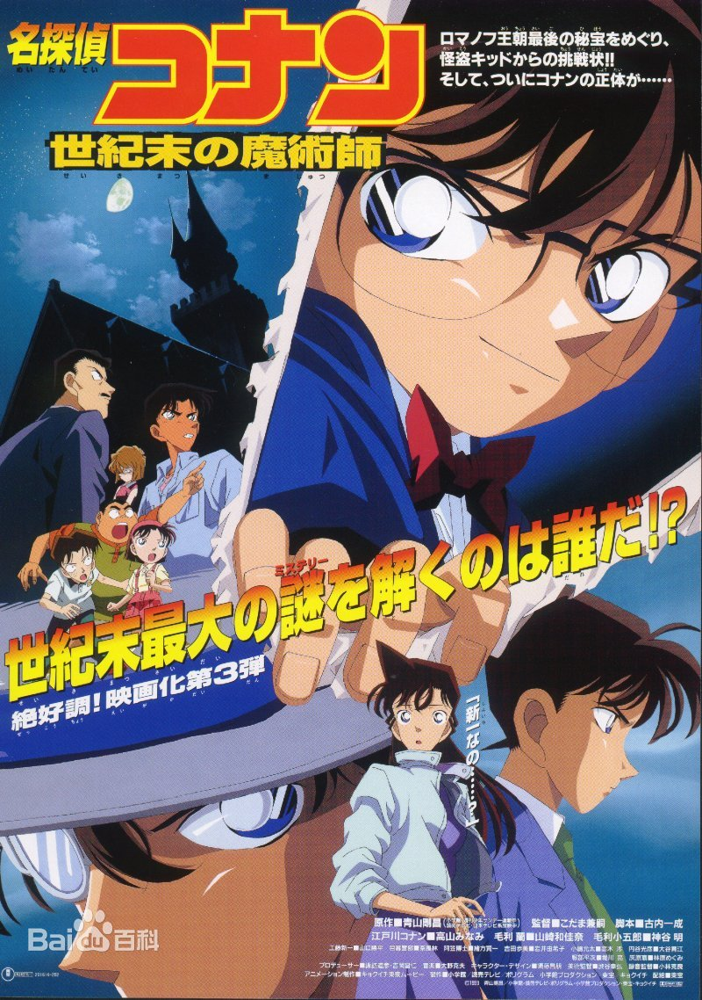

EP1 The Time Bombed Skyscraper
Xinyi received an invitation from the world-renowned architect Professor Moriya to hold a party in his residence. Conan, Xiaolan and Xiaowulang were invited to attend. This is the beginning of the event. Since then, a large number of plastic bombs as special gunpowder have been stolen. The man who claimed to be the murderer called a trailer and started a game with Conan. The prisoner called there again. Subsequently, the killer sent consecutive bomb notices. The city was in panic.
EP2 The Fourteenth Target
The people around Conan, Officer Mumu, Xiaolan's mother Concubine Yingli, and Dr. Ali suffered successive murders. Playing cards with mysterious keywords were left at the crime scene. Conan and others tracing the truth of the case rushed to the sea restaurant, where they were waiting for a new murderous drama.
EP3 The Last Wizard of the Century
The Phantom Thief Kid sends a heist notice, warning of another heist. The police deduce that his next target is a recently discovered Fabergé egg, which Suzuki Modern Art Museum in Osaka will display on August 22. The night of the heist, Kid steals the egg and flies off, and Conan and Heiji give chase. However, in the middle of the chase, an unknown assailant shoots Kid in the right eye, and Kid apparently falls into the sea to his death. After recovering the egg, the police fruitlessly search for Kid's body.

EP4 Captured in Her Eyes
Ran has a flashback of Shinichi taking her to the fountain at Tropical Land, the local amusement park. Conan (using Shinichi’s voice) calls Ran in a phone booth and she asks if they could go back to Tropical Land. The Detective Boys passes by causing Conan to quickly hang up.
The kids have come up with a new riddle but Conan solves it easily. Genta tries to cross a busy street, but policeman Osamu Narasawa stops him and advises the kids to wait for the next green light. When they finish crossing, Conan turns to see a mysterious man with an umbrella shoot Osamu. The man runs, and Conan attempts to give chase but is unable to. When Conan asks Osamu if he knew who shot him, the man grabs for his notebook and succumbs to his injuries.

EP5 Countdown to Heaven
The Junior Detective League, Conan, Vi, and Dr. Agasa are on a camping trip. Along the way, they notice Mt. Fuji and the newly constructed Twin Towers, the tallest buildings in Japan. During the night, George sees Vi talking to someone while he goes to the restroom.
Meanwhile, Gin and Vodka, on a hunt for Shiho Miyano, sneak into Akemi Miyano's flat and listen to the messages on the answering machine. They discover that Shiho will attend a private viewing of the aforementioned skyscrapers in Tokyo. Gin and Vodka plan to murder Shiho there.
EP6 The Phantom of Baker Street
Child prodigy Hiroki Sawada—who, by the age of ten, is already a MIT grad student and has developed a DNA Tracker software—has been under the guardianship of Thomas Schindler, owner of the software giant Schindler, Inc., since his mother died. One night, in a heavily guarded room at the top of the Schindler building where Hiroki lives, he finishes an artificial intelligence system, Noah's Ark, and sends the software through the telephone lines. The guards become suspicious when he does not respond. They bust open the door, but discover that Hiroki has disappeared, apparently having leapt off the building.

EP7 Crossroad in the Ancient Capital
Heiji Hattori searches for a girl he fell in love with after he saw her playing outside a temple when he was little. Meanwhile, Kogoro, Ran, Conan, and Sonoko go to Kyoto and meet up with Heiji and Kazuha to investigate a robbery and several murders. The killer tries to kill Heiji several times and severely injures Heiji. The killer kidnaps Kazuha, but Heiji collapses before he can reach her. Conan swallows a pill Haibara gave him and a bottle of wine, temporarily turning him back into Shinichi. He disguises himself as Heiji and attempts to arrest the killer and save Kazuha and manages to stall the murderer until Heiji arrives. Using kendo, Heiji fights the culprit while Shinichi runs into the woods to hide while his transformation into Conan occurs. In the woods, Shinichi bumps into Ran and stuns Ran with his tranquilizer watch to prevent her from seeing his transformation into Conan. Conan then reaches Heiji and Kazuha in time to save them by kicking sticks of fire at the culprit. The culprit continues to fight Heiji and manages to push the Osaka detective to the edge of the roof. Conan kicks a soccer ball at the enemy, giving Heiji time to regain his footing. In the end, Heiji finds out that the girl from his childhood was Kazuha and does not tell Kazuha that she is the girl he was looking for.
EP8 Magician of the Silver Sky
A stage actress, Julie wants to use her star sapphire for her upcoming play and asks for Mouri Kogoro help to protect it after showing Kogoro a letter from the Kaito Kid. On the day of the theft, Kid appears at the theatre disguised up as Shinichi Kudo but ends up fleeing in the end without the jewel. To thank them, Julie invites Kogoro and everyone to Hakodate, and they all travel on an airplane to get there. In the air, one of the show actor, Shinjo, who was supposed to be elsewhere and Ran's mother, Eri, joins them on the plane. As the plane takes off, Julie comes in physical contact with most of the individuals she invited, making them all suspects in the case of her death. The case was solved by Eri and the culprit was later found to be the makeup artist, Natsuki.

EP9 Strategy Above the Depths
The 9th annual Detective Conan movie sets sail on a 100 million yen luxurious cruise. Fifteen years ago, a cruise named Yashiromaru, built by the Yashiro group, sank while sailing. In the present, a new cruise, the Saint Aphrodite, was built by the Yashiro group and Conan and the rest were invited through Sonoko. Earlier, the husband of the CEO of the Yashiro family group, an established ship architect, had a heart-attack and drove his car down a cliff. On the second day of the cruise, the CEO herself was found murdered in her room. Later, her father, the President of the Yashiro group was also found missing. He had been thrown off the cruise into the ocean, seemingly by the same person. At the welcoming party, Kogoro shows off his deduction skills, and concluded that the sub-designer of the cruise, Akiyoshi, was the murderer. However, Conan has different ideas. Kusaka, a scriptwriter who worked in co-operation with Akiyoshi on a script, was the culprit. Kusaka reveals that the accident from 15 years ago was a scheme to sink the ship deliberately to get insurance. His father was murdered when he discovered the captain of the ship was drugged and left to die. Kusaka immediately set off bombs and escaped by sea and the Detective Boys gave chase. After they successfully took down the criminal, more bombs were ignited. All passengers were evacuated, but Ran returned to her hiding place during the hide-and-seek game to find a "gold medal" made by sea-shells the Detective Boys made for her. However, as the ship swayed, she fainted in the enclosed area.
EP10 The Private Eyes' Requiem
Conan, Kogoro, Ran, Ayumi, Genta, Mitsuhiko and Haibara are invited to visit a client in a hotel beside a theme park called Miracle Land. Ran and the kids leave after being given free theme park wristbands, while Conan and Kogoro are forced by the client to solve a mystery to remove the wrist watches, which are set to detonate. The client also reveals that the wristbands given to Ran and company are set to detonate should they leave the premises. The mystery man reveals that two other detectives gave up, one killed, while one is still working.
Conan and Kogoro investigate an empty hotel where they find ski masks and a gun, which were used for a robbery. On the same date of the robbery, Kaitou Kid stole some jewels from a nearby company. Kogoro retrieves the bag, but ends up getting arrested as Kid's accomplice. The mysterious man calls Conan, correctly identifies him as Shinichi and gives him a second clue.

EP11 Jolly Roger in the Deep Azure
Takagi and Sato chase thieves that robbed a supermarket. The thieves are injured in a car accident. One faints, the other is questioned. He mentions Koumijima (also Koumi Island), and Jolly Roger.
The scene changes to show Mouri Kogoro talking to the hotel receptionist on Koumijima. Behind him are the Detective Boys, Doctor Agasa, Ran and Sonoko. Kogoro brags how he won 300,000 yen by finishing a crossword puzzle, which Conan actually solved. The receptionist tells them their reservation was not found. At that moment the department head of the Tourism Agency, Iwanaga Jouji, appears and confirms their reservation but saying it is not at the hotel.
Afterwards, three muscular men walk past them and Conan proclaims they're treasure hunters. Ayumi, Mitsuhiko and Genta are excited there is a hidden treasure on the island. They are driven to an inn owned by Mima Kasuo. Iwanaga helps them plan their activities. The Detective Boys are going on a treasure hunt, Ran and Sonoko are going diving, and Kogoro is going drinking.

EP12 Full Score of Fear
The movie opens on the stage of a concert hall where a woman is observing two men during a practice. She sends a message on her cellphone, and then there is an explosion.
Elsewhere, an unknown person with the classic black silhouette of a man reads the news on the computer and comments on how he is getting closer to his plan of a Silent Night.
Later, on the grounds outside the hall, Conan Edogawa talks to Ran Mori on the phone as Shinichi Kudo. He investigates and sees an old man carefully picking up a piano key from the piano destroyed in the explosion, and putting it in his pocket. The man leaves in a car. Ran invites him to go to a rehearsal with her at the concert hall that is opening soon. He declines and tells her she's meddling too much which causes her to angrily reply he will never be like Sherlock Holmes because he's tone deaf. Ran angrily hangs up.
EP13 The Raven Chaser
A man driving down a hillside road realizes that his car's brakes have failed. The car crashes into a toll booth, killing the man. He leaves a dying message: "Tanabata kyo." A Mahjong tile next to his body links this case to six others in Tokyo, Kanagawa, Shizuoka, Nagano, and other Japanese prefectures. Because of the Mahjong tiles left beside each victim, the police conclude that the same person or organization committed these murders. The police across Japan unite to solve the serial murder case.
After a police conference about this case, Conan discovers a police officer entering a black Porsche 356A owned by Gin. He concludes that a Black Organization member disguised as an officer has infiltrated the meeting. On Tanabata, Conan corners Vermouth in the underground parking lot of a shopping mall. She reveals that the Black Organization needs a memory chip, which the murderer took, and a new member, "Irish".

EP14 The Lost Ship in the Sky
A terrorist group invades a laboratory containing a deadly bacteria and destroys the lab with an explosion. They later announce via the internet they have gained possession of the bacteria and declare themselves to be the Red Siamese Cats (赤いシャムネコ, Akai Shamu Neko), a terrorist group that was eradicated a decade ago.
Conan Edogawa, Kogoro Mori, Ran Mori and The Detective Boys are invited by Sonoko Suzuki's uncle, Jirokichi Suzuki, to fly in his airship to witness his attempt at capturing Kaito Kid by baiting him with the jewel called Lady Sky (レディー スカイ, Redī Sukai). Kid replies to Jirokichi's challenge with a letter announcing he will steal Lady Sky when the airship approaches Osaka. Aboard the airship, besides its employees and the police, there are four others who are working for the media: Takamichi Fujioka, a journalist; Masaki Mizukawa, a TV director; Kasumi Nishitani, a reporter; and Junpei Ishimoto, a cameraman. Meanwhile, a waitress enters the smoking room where an ampoule with the logo of the Red Siamese Cats is seen under the sofa. Conan reminisces to Doctor Agasa about the time Ran thought an airship was a Unidentified flying object and asks him to keep it a secret. A waiter overhears Conan in the shadows.
EP15 Quarter of Silence
The Governor of Tokyo, Yuuichiro Asakura, receives a threatening letter the day before the opening of Touto Line, a new train line for the Tokyo Metro. During the opening ceremony of the line, Conan Edogawa and the Detective Boys are driven by Hiroshi Agasa and pass under the Touto Line. Conan, having heard about the threatening letter, notices explosives connected to the Touto railway; Using his original voice to inform the police as Shinichi Kudo, he is able to stop the train and divert traffic away from the explosives preventing any deaths. Conan researches Asakura's political history for a clue on the culprit and learns the governor was in charge of the construction of dam in Kitanosawa, a fictional town in the Niigata Prefecture. Due to the dam's construction, the citizens of Kitanosawa were forced into a new town and their old homes were drowned by the dam. Since Asakura's trip to celebrate the anniversary of the dam is canceled by the bombing, Conan speculates information on the bomber could be found in Kitanosawa and plans a trip there.
EP16 The Eleventh Striker
The Detective Boys attend a promotional event where the J. League play soccer with children. There, the group are introduced to several people. The next day, the Detective Boys watch the soccer match at Touto Stadium. Kogoro Mori receives a phone call from a bomber who relays the location of a bomb in the form of a riddle. The riddle reads "Blue zebra and blue boy, rain from above, people from below, their left hand, as it is shows, the tree on the left. Ran Mori relays the riddle to Shinichi Kudo allowing Conan to decipher it. The blue zebra and boy refer to the mascots of the teams currently playing at Touto stadium. The rest of the riddle is a play on kanji; The top part of Rain (雨, Ame), bottom part of People (人, Hito), left of Hand (手, Te), Show (示, Shī) as it is, and the left of Tree (木, Ki). Filling in the missing parts of the kanji and adding them together forms the word Electronic Scoreboard (電光掲示板, Denkō Keijiban). With little time to evacuate the spectators, Conan traverses up the infrastructure and arranges the explosives so the scoreboard falls in a safe location.

EP17 Private Eye in the Distant Sea
At Maizuru Bay, on the dawn of April 20, a coast guard named Masaki Kurata finds a suspicious boat during his patrol. Upon examining the inside of the boat, he discovers some explosives and immediately reports this to the Wakasa Coast Guard. The discovery quickly hits the news reports, where is it revealed that the boat contains data and components not found in Japan. It's also believed to have entered Japan illegally.

EP18 The Sniper from Another Dimension
Sonoko invites Conan, Agasa, Ran, Kogoro and the Detective Boys to the pre-opening ceremony and the observation deck of Bell Tree Tower, built by the Suzuki Financial Group. While they are there, a sniper shoots at one of the guests, Hiroaki Fujinami, from a nearby building. Conan, having observed the possible suspect, pursues the suspect with Masumi Sera joining later. The suspect blows up police patrol cars during the escape and despite the FBI's attempt to follow the suspect, the suspect jumps away to the Tokyo Bay. Tokyo Metropolitan Police and FBI later concludes that Timothy Hunter, an ex-Navy SEALS and former recipient of Silver Star decoration is a possible suspect. The FBI believes Hunter also attempted to murder two former American military officers, Jack Waltz and Bill Murphy, and another Japanese civilian, Hitoshi Moriyama.

EP19 Sunflowers of Inferno
At an exclusive auction house in New York City, a painting recently found in Arles is up for bids. It had been examined by various experts and declared to be one of Vincent van Gogh's "Sunflowers", similar to a masterpiece thought to be destroyed during a U.S. air raid in Japan during World War II.
Jirokichi Suzuki, accompanied by his niece, Sonoko fights off all contenders with a $300 million bid. At a press conference, he announces his plan to gather all seven of the known Van Gogh's Sunflowers paintings around the world for a grand exhibition. The venue would be a purpose-built gallery in Japan known as "Lake Rock", which boasts of iron-clad security and protection of the art pieces against fire, damaging humidity, sunlight, etc. The announcement is broadcast live worldwide, watched by Conan and Haibara.
EP20 The Darkest Nightmare
A Black Organization spy, code-name Curaçao, infiltrates the NPA Security Bureau Office, stealing the NOC list of MI6, BND, CSIS, FBI and CIA agents working undercover in the Black Organization. Yuya Kazami, an officer of the Public Security Bureau, catches her red handed and Curaçao is forced to run away. Rei Furuya, also known as Bourbon, attempts to stop her from escaping and later engages in a car chase on the Rainbow Bridge, with Akai Shuichi joining later. The car chase ends up causing a havoc, and Akai decides to shoot the tire of Curaçao's vehicle, causing the car to crash and fall off the bridge. Curaçao escapes from the car as it is falling and lands in the water. She later surfaces at Tohto Aquarium near the crash site.

EP21 The Crimson Love Letter
A bombing case at Nichiuri TV in autumn. The Satsuki Cup, which crowns the winner of Japan's Ogura Hyakunin Isshu based competitive karuta tournament, is currently being filmed inside the facility. The incident results in a big commotion and, while the building is burning to ashes, the only people left inside are Heiji and Kazuha. They get rescued just in time by Conan, who rushes to the scene. Both the identity and motive of the bomber are unknown.
While confusion takes over due to the explosion, Conan meets a mysterious beautiful girl who claims she is "Heiji's fiancée". Her name is Momiji Ooka and she is the Kyoto High School karuta champion. As fate would have it, Kazuha is going to face Momiji in the Hyakunin Isshu competition, so she begins to train with the help of Heiji's mother, Shizuka, who is a skilled Karuta player.
EP22 Zero the Enforcer
Located in Tokyo Bay, the newly built integrated resort and convention center "Edge of Ocean" is going to host an upcoming Summit Meeting. Prior to the Summit, an explosion went off at one of the building, killing and injuring many Public Security Bureau personnel performing inspection there, including Amuro Tōru and Kazami Yūya. A preliminary investigation found the fingerprint which matches the Mori Kogoro's, and with other evidence purportedly located inside Kogoro's computer, Kogoro is arrested. After a hopeless search for a lawyer who is willing to represent Kogoro in the trial, Ran, Kisaki Eri, and Conan encountered a freelance lawyer, Tachibana Kyōko, who offered to represent Kogoro in the case.

EP23 The Fist of Blue Sapphire
The world's greatest blue sapphire, the "blue lapis fist", said to have sunk in a pirate ship in the late 19th century, on the coasts of Singapore. A local millionaire plots to retrieve it, and when it's exhibited in an exhibition at the Singapore Marina Bay Sands hotel, a murder takes place. A bloody Kaitou Kid announcement card is found in the crime scene.
In the meantime, Kogoro, Ran, and Sonoko have come to Singapore to cheer on the strongest karateka with a streak of 400 consecutive victories, Makoto Kyogoku, who is fighting in a karate tournament held there. Conan, who doesn't have a passport and can't travel overseas, was supposed to stay at home. He begs for Haibara to give him the antidote for him to transform to Shinichi, but she refuses.
Later that night, while Conan goes out for a walk, Kid, disguised as Ran, sneaks up behind Conan. Conan notices her, but then gets captured. Conan, realizing he is trapped in a suitcase, uses a pen to poke the zipper and he promptly gets out. Looking around, he realizes that he is in Singapore. Conan also realizes his body color got darker.
Back To Top